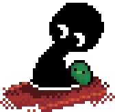

What is This Thing?
Another Platformer is an action-adventure platformer that tests your skills to the limit with tight controls to navigate danger dense environments, power up and combine your favorite weapons, ally with the locals, and make friends with frogs.
Another Platformer has the player primarily jumps and shoots with some technical actions like aiming, dodging and crafting. Some RPG elements like NPC dialogue trees and dynamic interactions that lead to unique outcomes are also present. Some actions may be limited if not enough of the language is learned through item interactions and hitting certain game checkpoints.


Another Platformer is a work-in-progress game that is provided as is. Another Platformer will never as for a password to run and will never be hosted on unprotected sites like blogger or a GitHub site. Any website distributing Another Platformer other than this one or any sites redirection from here is NOT affiliated with this project.